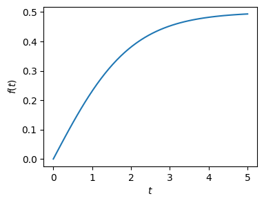
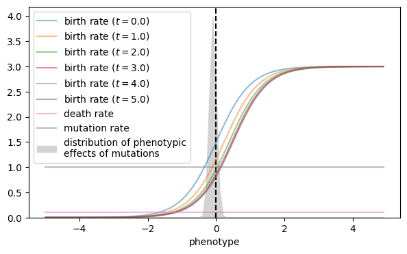
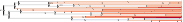
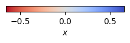
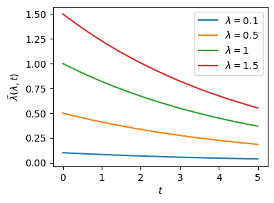
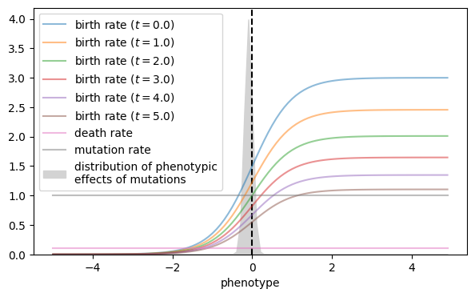
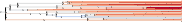
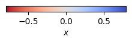

Inhomogeneous processes#
import numpy as np
import matplotlib.pyplot as plt
from gcdyn import bdms, mutators, poisson
Phenotype-modulated model#
Parameters#
Response functions#
For the birth rate we’ll include an external field \(f(t)\) and interaction \(\phi(x, f(t))\) for temporally modulating the phenotype response
def f(t):
return 1 / (1 + np.exp(-1 * t)) - 1 / 2
def φ(x, f):
return x - f
t = np.linspace(0, 5)
plt.figure(figsize=(4, 3))
plt.plot(t, f(t), label="f(t)")
plt.xlabel("$t$")
plt.ylabel("$f(t)$")
plt.show()

birth_rate = poisson.ModulatedPhenotypeResponse(poisson.SigmoidResponse(xscale=2.0, xshift=0, yscale=3, yshift=1e-3),
f, φ)
death_rate = poisson.ConstantResponse(0.1)
mutation_rate = poisson.ConstantResponse(1.0)
Mutator#
mutator = mutators.GaussianMutator(shift=-0.1, scale=0.1)
# NBVAL_IGNORE_OUTPUT
x_grid = np.arange(-5, 5, 0.1)
plt.figure(figsize=(7, 4))
plt.axvline(0, color="k", linestyle="--")
for t in np.linspace(0, 5, 6):
plt.plot(x_grid, birth_rate.λ_phenotype_time(x_grid, t), label=f"birth rate ($t={t}$)", alpha=0.5)
plt.plot(x_grid, death_rate.λ_phenotype(x_grid), label="death rate", alpha=0.5)
plt.plot(x_grid, mutation_rate.λ_phenotype(x_grid), label="mutation rate", alpha=0.5)
plt.fill_between(x_grid, mutator.prob(0, x_grid), color="lightgrey", label="distribution of phenotypic\neffects of mutations")
plt.xlabel('phenotype')
# plt.ylabel('event rate')
plt.ylim(0, None)
plt.legend()
plt.show()

Simulate#
rng = np.random.default_rng(seed=0)
time_to_sampling = 5
for iter in range(1000):
try:
tree = bdms.TreeNode()
tree.x = 0
tree.evolve(
time_to_sampling,
birth_response=birth_rate,
death_response=death_rate,
mutation_response=mutation_rate,
mutator=mutator,
min_survivors=100,
birth_mutations=False,
seed=rng,
)
print(f"try {iter + 1} succeeded, tip count: {len(tree)}")
break
except bdms.TreeError as e:
print(f"try {iter + 1} failed, {e}", flush=True)
continue
try 1 failed, 'number of survivors 12 is less than min_survivors=100'
try 2 failed, 'number of survivors 0 is less than min_survivors=100'
try 3 failed, 'number of survivors 61 is less than min_survivors=100'
try 4 failed, 'number of survivors 3 is less than min_survivors=100'
try 5 failed, 'number of survivors 17 is less than min_survivors=100'
try 6 failed, 'number of survivors 5 is less than min_survivors=100'
try 7 succeeded, tip count: 158
tree.sample_survivors(n=20, seed=rng)
tree.prune()
# NBVAL_SKIP
tree.render("x", "%%inline")


Rate-modulated model#
Parameters#
Response functions#
We’ll modulate the birth rate to approximate a capacity constraint
def f(λ, x, t):
return λ * np.exp(-0.2 * t)
t = np.linspace(0, 5)
plt.figure(figsize=(4, 3))
for λ in [0.1, 0.5, 1, 1.5]:
plt.plot(t, f(λ, None, t), label=f"$\lambda={λ}$")
plt.xlabel("$t$")
plt.ylabel(r"$\tilde\lambda(\lambda, t)$")
plt.legend()
plt.show()

birth_rate = poisson.ModulatedRateResponse(poisson.SigmoidResponse(xscale=2.0, xshift=0, yscale=3, yshift=0.0), f)
# NBVAL_IGNORE_OUTPUT
x_grid = np.arange(-5, 5, 0.1)
plt.figure(figsize=(7, 4))
plt.axvline(0, color="k", linestyle="--")
for t in np.linspace(0, 5, 6):
plt.plot(x_grid, birth_rate.λ_phenotype_time(x_grid, t), label=f"birth rate ($t={t}$)", alpha=0.5)
plt.plot(x_grid, death_rate.λ_phenotype(x_grid), label="death rate", alpha=0.5)
plt.plot(x_grid, mutation_rate.λ_phenotype(x_grid), label="mutation rate", alpha=0.5)
plt.fill_between(x_grid, mutator.prob(0, x_grid), color="lightgrey", label="distribution of phenotypic\neffects of mutations")
plt.xlabel('phenotype')
# plt.ylabel('event rate')
plt.ylim(0, None)
plt.legend()
plt.show()

Simulate#
time_to_sampling = 5
for iter in range(1000):
try:
tree = bdms.TreeNode()
tree.x = 0
tree.evolve(
time_to_sampling,
birth_response=birth_rate,
death_response=death_rate,
mutation_response=mutation_rate,
mutator=mutator,
min_survivors=100,
capacity=1000,
birth_mutations=False,
seed=rng,
)
print(f"try {iter + 1} succeeded, tip count: {len(tree)}")
break
except bdms.TreeError as e:
print(f"try {iter + 1} failed, {e}", flush=True)
continue
try 1 failed, 'number of survivors 0 is less than min_survivors=100'
try 2 failed, 'number of survivors 9 is less than min_survivors=100'
try 3 failed, 'number of survivors 37 is less than min_survivors=100'
try 4 failed, 'number of survivors 7 is less than min_survivors=100'
try 5 failed, 'number of survivors 13 is less than min_survivors=100'
try 6 failed, 'number of survivors 12 is less than min_survivors=100'
try 7 failed, 'number of survivors 19 is less than min_survivors=100'
try 8 failed, 'number of survivors 37 is less than min_survivors=100'
try 9 failed, 'number of survivors 30 is less than min_survivors=100'
try 10 failed, 'number of survivors 2 is less than min_survivors=100'
try 11 failed, 'number of survivors 0 is less than min_survivors=100'
try 12 failed, 'number of survivors 67 is less than min_survivors=100'
try 13 failed, 'number of survivors 17 is less than min_survivors=100'
try 14 failed, 'number of survivors 0 is less than min_survivors=100'
try 15 failed, 'number of survivors 15 is less than min_survivors=100'
try 16 failed, 'number of survivors 25 is less than min_survivors=100'
try 17 failed, 'number of survivors 0 is less than min_survivors=100'
try 18 failed, 'number of survivors 5 is less than min_survivors=100'
try 19 failed, 'number of survivors 3 is less than min_survivors=100'
try 20 failed, 'number of survivors 9 is less than min_survivors=100'
try 21 failed, 'number of survivors 55 is less than min_survivors=100'
try 22 failed, 'number of survivors 25 is less than min_survivors=100'
try 23 failed, 'number of survivors 28 is less than min_survivors=100'
try 24 failed, 'number of survivors 4 is less than min_survivors=100'
try 25 failed, 'number of survivors 34 is less than min_survivors=100'
try 26 failed, 'number of survivors 55 is less than min_survivors=100'
try 27 failed, 'number of survivors 0 is less than min_survivors=100'
try 28 failed, 'number of survivors 8 is less than min_survivors=100'
try 29 failed, 'number of survivors 36 is less than min_survivors=100'
try 30 failed, 'number of survivors 47 is less than min_survivors=100'
try 31 failed, 'number of survivors 84 is less than min_survivors=100'
try 32 failed, 'number of survivors 68 is less than min_survivors=100'
try 33 failed, 'number of survivors 57 is less than min_survivors=100'
try 34 succeeded, tip count: 231
tree.sample_survivors(n=20, seed=rng)
tree.prune()
# NBVAL_SKIP
tree.render("x", "%%inline")

